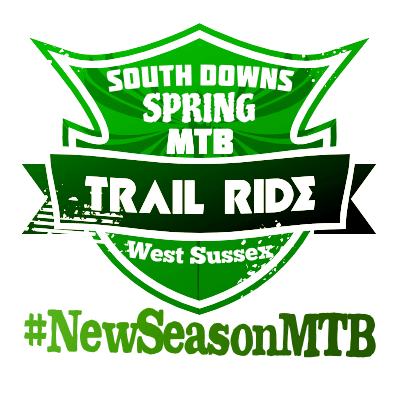

DETAILS:The Suzuki MTB Tour is the perfect combination between the Cross Country (XC) and the Cross Country Marathon (XCM). Account with Kids Zone for children between 4 to 12 years apart from Family, Intermediate and Expert categories. The distances between 12 / 15K to 22 / 25K and 28/32 K with altimetry between 400 and 1,400 meters.
Trail Ride

AVAILABILITY: May-September
LENGTH: 15 miles
COST: $95
DETAILS:The Trail Ride offers riders a beautiful view of the Montana mountains. Riders are alongside our guides on this 15 mile long trail. This trail is one of the worlds best mountain biking trails, with some of the best terrain. This trail will test riders abilities like no other trail.